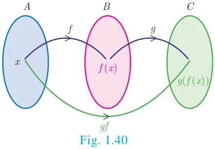
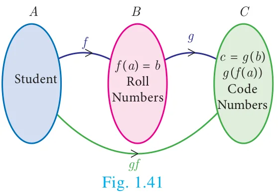
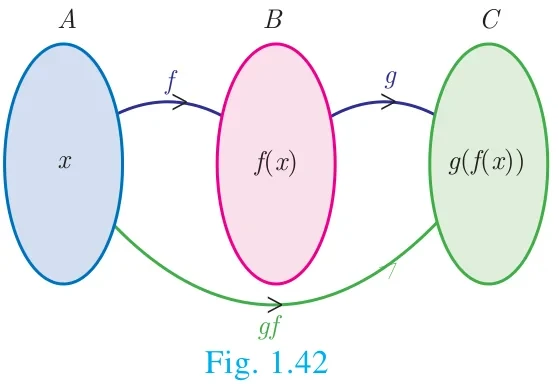
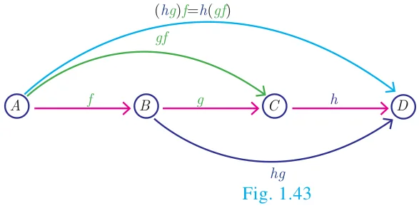

When a car driver depresses the accelerator pedal, it controls the flow of fuel which in turn influences the speed of the car. Likewise, the composition of two functions is a kind of ‘chain reaction’, where the functions act upon one after another (Fig. 1.40).
We can explain this further with the concept that a function is a ‘process’. If \(f\) and \(g\) are two functions then the composition \(g(f(x))\) (Fig. 1.41) is formed in two steps.
- Feed an input (say \(x\)) to \(f\);
- Feed the output \(f(x)\) to \(g\) to get \(g(f(x))\) and call it \(gf(x)\).
Illustration

Consider the set \(A\) of all students, who appeared in class \(X\) of Board Examination. Each student appearing in the Board Examination is assigned a roll number. In order to have confidentiality, the Board arranges to deface the roll number of each student and assigns a code number to each roll number.
Let \(A\) be the set of all students appearing for the board exam. \(B \subseteq \mathbb{N}\) be the set all roll numbers and \(C \subseteq \mathbb{N}\) be the set of all code numbers (Fig. 1.41). This gives rise to two functions \(f : A \to B\) and \(g : B \to C\) given by \(b = f(a)\) be the roll number assigned to student \(a\), \(c = g(b)\) be the code number assigned to roll number \(b\), where \(a \in A\), \(b \in B\) and \(c \in C\).
We can write \(c = g(b) = g(f(a))\).
Thus, by the combination of these two functions, each student is eventually attached a code number. This idea leads to the following definition.
Definition
Let \(f : A \to B\) and \(g : B \to C\) be two functions (Fig. 1.42). Then the composition of \(f\) and \(g\) denoted by \(g \circ f\) is defined as the function \(g \circ f(x) = g(f(x))\ \forall\ x \in A\).

Example 1.19
Find \(f \circ g\) and \(g \circ f\) when \(f(x) = 2x + 1\) and \(g(x) = x^2 - 2\)
Solution
\(f(x) = 2x + 1\), \(g(x) = x^2 - 2\)
\(f \circ g(x) = f(g(x)) = f(x^2 - 2) = 2(x^2 - 2) + 1 = 2x^2 - 3\)
\(g \circ f(x) = g(f(x)) = g(2x + 1) = (2x + 1)^2 - 2 = 4x^2 + 4x - 1\)
Thus \(f \circ g = 2x^2 - 3\), \(g \circ f = 4x^2 + 4x - 1\). From the above, we see that \(f \circ g \neq g \circ f\).
Thinking Corner
If \(f(x) = x^m\) and \(g(x) = x^n\) does \(f \circ g = g \circ f\)?
Note
Generally, \(f \circ g \neq g \circ f\) for any two functions \(f\) and \(g\). So, composition of functions is not commutative.
Example 1.20
Represent the function \(f(x) = \sqrt{2x^2 - 5x + 3}\) as a composition of two functions.
Solution
\(f_2(x) = 2x^2 - 5x + 3\) and \(f_1(x) = \sqrt{x}\)
\(\begin{aligned} f(x) &= \sqrt{2x^2 - 5x + 3} = \sqrt{f_2(x)} \\ &= f_1[f_2(x)] = f_1 f_2(x) \end{aligned}\)
Example 1.21
If \(f(x) = 3x - 2\), \(g(x) = 2x + k\) and if \(f \circ g = g \circ f\), then find the value of \(k\).
Solution
\(f(x) = 3x - 2\), \(g(x) = 2x + k\)
\(f \circ g(x) = f(g(x)) = f(2x + k) = 3(2x + k) - 2 = 6x + 3k - 2\)
\(f \circ g(x) = 6x + 3k - 2\).
\(g \circ f(x) = g(3x - 2) = 2(3x - 2) + k\)
\(g \circ f(x) = 6x - 4 + k\).
Given that \(f \circ g = g \circ f\)
\(\therefore 6x + 3k - 2 = 6x - 4 + k\)
\(6x - 6x + 3k - k = -4 + 2 \Rightarrow k = -1\)
Do you know?
The Composition \(g \circ f(x)\) exists only when range of \(f\) is a subset of domain of \(g\).
Example 1.22
Find \(k\) if \(f \circ f(k) = 5\) where \(f(k) = 2k - 1\).
Solution
\(\begin{aligned} f \circ f(k) &= f(f(k)) \\ &= 2(2k - 1) - 1 = 4k - 3. \end{aligned}\)
\(f \circ f(k) = 4k - 3\)
But, \(f \circ f(k) = 5\)
\(\therefore 4k - 3 = 5 \Rightarrow k = 2\).
1.9.1 Composition of three functions

Let \(A, B, C, D\) be four sets and let \(f : A \to B\), \(g : B \to C\) and \(h : C \to D\) be three functions (Fig. 1.43). Using composite functions \(f \circ g\) and \(g \circ h\), we get two new functions like \((f \circ g) \circ h\) and \(f \circ (g \circ h)\).
We observed that the composition of functions is not commutative. The natural question is about the associativity of the operation.
Note
Composition of three functions is always associative. That is, \(f \circ (g \circ h) = (f \circ g) \circ h\)
Example 1.23
If \(f(x) = 2x + 3\), \(g(x) = 1 - 2x\) and \(h(x) = 3x\). Prove that \(f \circ (g \circ h) = (f \circ g) \circ h\)
Solution
\(f(x) = 2x + 3\), \(g(x) = 1 - 2x\), \(h(x) = 3x\)
\(\begin{aligned} \text{Now, } (f \circ g)(x) &= f(g(x)) = f(1 - 2x) = 2(1 - 2x) + 3 = 5 - 4x \\ \text{Then, } (f \circ g) \circ h(x) &= (f \circ g)(h(x)) = (f \circ g)(3x) = 5 - 4(3x) = 5 - 12x && \ldots(1) \\ (g \circ h)(x) &= g(h(x)) = g(3x) = 1 - 2(3x) = 1 - 6x \\ \Rightarrow f \circ (g \circ h)(x) &= f(1 - 6x) = 2(1 - 6x) + 3 = 5 - 12x && \ldots(2) \end{aligned}\)
From (1) and (2), we get \((f \circ g) \circ h = f \circ (g \circ h)\)
Example 1.24
Find \(x\) if \(gff(x) = fgg(x)\), given \(f(x) = 3x + 1\) and \(g(x) = x + 3\).
Solution
\(gff(x) = g[f\{f(x)\}]\) (This means “\(g\) of \(f\) of \(f\) of \(x\)”)
\(= g[f(3x + 1)] = g[3(3x + 1) + 1] = g(9x + 4)\)
\(g(9x + 4) = [(9x + 4) + 3] = 9x + 7\)
\(fgg(x) = f[g\{g(x)\}]\) (This means “\(f\) of \(g\) of \(g\) of \(x\)”)
\(= f[g(x + 3)] = f[(x + 3) + 3] = f(x + 6)\)
\(f(x + 6) = [3(x + 6) + 1] = 3x + 19\)
These two quantities being equal, we get \(9x + 7 = 3x + 19\). Solving this equation we obtain \(x = 2\).
Progress Check
State your answer for the following questions by selecting the correct option.
- Composition of functions is commutative
(a) Always true (b) Never true (c) Sometimes true
- Composition of functions is associative
(a) Always true (b) Never true (c) Sometimes true
Activity 4
Given that \(h(x) = f \circ g(x)\), fill in the table for \(h(x)\)
| \(x\) | \(f(x)\) | \(x\) | \(g(x)\) | \(x\) | \(h(x)\) |
|---|---|---|---|---|---|
| 1 | 2 | 1 | 2 | 1 | 3 |
| 2 | 3 | 2 | 4 | 2 | - |
| 3 | 1 | 3 | 3 | 3 | - |
| 4 | 4 | 4 | 1 | 4 | - |
How to find \(h(1)\)?
\(\begin{aligned} h(x) &= f \circ g(x) \\ h(1) &= f \circ g(1) \\ &= f(2) = 3 \\ \therefore h(1) &= 3 \end{aligned}\)